Mazda Plastic Model Kits
Welcome to the most comprehensive Mazda plastic model kit list on the net. Click on any thumbnail to view larger images. Items marked with WANTED are items I'm looking for — email me if you have one for sale.
| Picture | Scale | Manufacturer | Item | Packaging | Id# | Country |
|---|---|---|---|---|---|---|
| Airfix | ||||||
| WANTED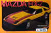 | 1:24 | Airfix | Mazda Savanna RX-7 racer. This kit is the same as GUNZE SANGYO Kit #113 | Box | 8131 | 🇺🇸 |
| AMT | ||||||
WANTED |
1:25 | AMT | Mazda RX-7 First generation (SA) of the classic RX-7 1978 | Box | 2004 | 🇺🇸 |
| WANTED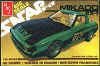 | 1:25 | AMT | Mazda RX-7 SA "MIKADO" Race version of the first generation RX-7 1978 | Box | 2217 | 🇺🇸 |
| WANTED |
1:25 | AMT | Mazda RX-7 SA Snap-Fit model 1981 | Box | PK-2301 | 🇺🇸 |
| WANTED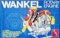 | 1:4 | AMT | Visible Rotary Engine. Look-thru model of a rotary engine. | Box | T-575 | 🇺🇸 |
| Aoshima | ||||||
WANTED |
1:24 | Aoshima | Mazda Savanna RX-7. This model kit is of a 1st generation RX-7. | Box | 03706 | 🇯🇵 |
| WANTED | 1:38 | Aoshima | Mazda Savanna RX-7 Racing car #11 IMSA racer with wind-up motor (1978) | Box | KT100 | 🇯🇵 |
WANTED |
1:24 | Aoshima | Mazda Savanna RX-7 Racing car #77 IMSA Daytona (1979) | Box | 03576 | 🇯🇵 |
WANTED |
1:24 | Aoshima | Mazda Savanna RX-7 Racing car #7 Daytona 24 Hr (1979) | Box | 03500 | 🇯🇵 |
WANTED |
1:24 | Aoshima | Mazda Savanna RX-7 Silhouette. This kit is a racing version, car #78. | Box | 00203/281:500 SR 08 | 🇯🇵 |
| WANTED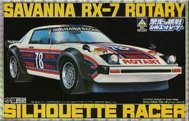 | 1:24 | Aoshima | Mazda RX-7 Rotary Silhouette racer car #78. This model kit is of a 1st generation RX-7. | Box | 3G-63-500 | 🇯🇵 |
| WANTED | 1:20 | Aoshima | Mazda RX-7 Rotary racer car #3. This model kit is of a 1st generation RX-7 white car with green stripes. | Box | SR 04 | 🇯🇵 |
WANTED |
1:20 | Aoshima | Mazda Savanna RX-7 Silhouette IMSA race version, car #7. | Box | SR 05 | 🇯🇵 |
| WANTED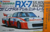 | 1:20 | Aoshima | Mazda Savanna RX-7 Silhouette This is a reissue of the above kit. | Box | 03708 | 🇯🇵 |
✓ HAVE |
1:32 | Aoshima | Mazda Savanna RX-7 FC3S. Late type face lifted 2nd generation Ryousuku Takahashi. | Box | 0022160 02 | 🇯🇵 |
| WANTED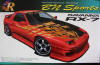 | 1:24 | Aoshima | Mazda Savanna RX-7 FC3S BN Sports. | Box | 038017 #93 | 🇯🇵 |
WANTED |
1:24 | Aoshima | Mazda Savanna RX-7 FC3 RE雨宮 S package Ver. R series. | Box | 042533 #50 | 🇯🇵 |
| WANTED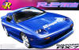 | 1:24 | Aoshima | Mazda Savanna RX-7 FC3 RE雨宮 S package Ver. R series. | Box | #49 | 🇯🇵 |
WANTED |
1:24 | Aoshima | Mazda Savanna RX-7 FC3S '85 early type. This is from the "Best Car GT" Series | Box | 036754 #70 | 🇯🇵 |
| WANTED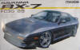 | 1:24 | Aoshima | Mazda Savanna RX-7 FC3S '89 late type. This is from the "Best Car GT" Series | Box | 036761 #71 | 🇯🇵 |
WANTED |
1:24 | Aoshima | Mazda RX-7 FC3S Team Samurai Project D1 Project. From the D1 Grand Prix series. | Box | 03704 #11 | 🇯🇵 |
| WANTED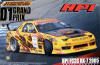 | 1:24 | Aoshima | Mazda RX-7 FC3S HPI D1 Project. From the D1 Grand Prix series. | Box | 03705 | 🇯🇵 |
WANTED |
1:24 | Aoshima | Mazda RX-7 FC3S Racing Beat Boneville Speed Trail '86. From the "S-Package Ver. R" series. | Box | 03768 | 🇯🇵 |
WANTED |
1:24 | Aoshima | Mazda Savanna RX-7 FC3S. This is from the "Ita-Sha" Series | Box | 04417 #04 | 🇯🇵 |
| WANTED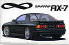 | 1:24 | Aoshima | Mazda Savanna RX-7 FC3S . This is a curb side model from the "Best Car GT" Series | 32.5 x 21.5 x 7cm | 04252 | 🇯🇵 |
✓ HAVE |
1:32 | Aoshima | Mazda έfini RX-7 FD3S Street Gear. This is a 3rd generation RX-7 fitted out for street racing. | Box | 0022160 04 | 🇯🇵 |
WANTED |
1:24 | Aoshima | Mazda έfini RX-7 Type R FD3S Japanese version RHD (see Revell kit #7357) | Box | 0000114-87 | 🇯🇵 |
| WANTED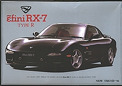 | 1:24 | Aoshima | Mazda έfini RX-7 Type R FD3S. The same as kit #618072-0000114 , but in black plastic and different box. | Box | 000127 87B | 🇯🇵 |
WANTED |
1:24 | Aoshima | Mazda έfini RX-7 Type R FD3S. The car is red on the box, but is molded in black plastic. | Box | 0017937 21 | 🇯🇵 |
| WANTED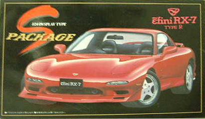 | 1:24 | Aoshima | Mazda έfini RX-7 FD3S Type R "S-Package" | Box | 0000388 S-47 | 🇯🇵 |
✓ HAVE |
1:24 | Aoshima | Mazda έfini RX-7 FD3S "S-Package" | 32.5x21.5x7 | 0000388 1500 S-47 | 🇯🇵 |
WANTED |
1:24 | Aoshima | Mazda έfini RX-7 FD3S Type R. Hashiriya race version with a huge rear spoiler. | Box | 0015605 24 | 🇯🇵 |
| WANTED | 1:24 | Aoshima | Mazda έfini RX-7 FD3S Type R from ZR series. This is a 3rd generation RX-7 with Speedline on the number plate. | Box | 0016541 23 | 🇯🇵 |
✓ HAVE |
1:24 | Aoshima | Mazda έfini RX-7 FD type R. Street Gear Street race version with different wheels and spoilers | Box | 0020791 1 | 🇯🇵 |
WANTED |
1:24 | Aoshima | Mazda RX-7 FD3S Super ZR | Box | ??? | 🇯🇵 |
WANTED |
1:24 | Aoshima | Mazda RX-7 FD R1 LHD version of 3rd generation (This model kit was only issued in the U.S.) | Box | 0012635 97 | 🇯🇵 |
✓ HAVE |
1:24 | Aoshima | Mazda RX-7 FD3S Veilside combat Model, from the S package Ver. R series | 32.5x21.5x7 | 025758 #64 | 🇯🇵 |
| ✓ HAVE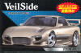 | 1:24 | Aoshima | Mazda RX-7 FD3S Veilside combat Model. | 32.5x21.5x7 | 026885 | 🇯🇵 |
✓ HAVE |
1:24 | Aoshima | Mazda RX-7 FD Veilside kit combat II | 32.5x21.5x7 | 029022 #72 | 🇯🇵 |
✓ HAVE |
1:24 | Aoshima | Mazda RX-7 FD3S C-West from the S package ver. R series | 32.5x21.5x7 | 028339 #70 | 🇯🇵 |
| ✓ HAVE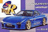 | 1:24 | Aoshima | Mazda RX-7 FD3S Mazdaspeed GT-C concept Ver. R from the S Package series | 32.5x21.5x7 | 023822-1800 #60 | 🇯🇵 |
WANTED |
1:24 | Aoshima | Mazda RX-7 FD3S Mazdaspeed GT-C concept Ver. R from the S Package series. This is an updated (reboxed) version of the above model. | 32.5x21.5x7 | ??? | 🇯🇵 |
✓ HAVE |
1:24 | Aoshima | The same as above, but with painted Body parts. Mazda RX-7 FD3S Mazdaspeed GT-C concept Ver. R from the S Package series | 32.5x21.5x7 | 026878 | 🇯🇵 |
✓ HAVE |
1:24 | Aoshima | Mazda RX-7 FD3S Veilside with a special chameleon paint. | 32.5x21.5x7 | 028353 | 🇯🇵 |
✓ HAVE |
1:24 | Aoshima | Mazda RX-7 FD "The Patrol Car" Japanese patrol car | 32.5x21.5x7 | 0023907-1600 #3 | 🇯🇵 |
WANTED |
1:24 | Aoshima | Mazda RX-7 FD3S `98. From "The Best Car" series. | 32.5x21.5x7 | 0036327 #58 | 🇯🇵 |
| WANTED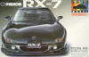 | 1:24 | Aoshima | Mazda RX-7 FD3S '98 pre-paintedi n Brilliant Black | Box | No.8 | 🇯🇵 |
WANTED |
1:24 | Aoshima | Mazda RX-7 FD3S '98 pre-painted in Innocent Blue Mica From the "Pre-painted" series. | Box | ??? | 🇯🇵 |
WANTED |
1:24 | Aoshima | Mazda RX-7 FD3S Vertex From the "S- Package Ver. R" series. | Box | 03333 | 🇯🇵 |
| WANTED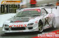 | 1:24 | Aoshima | Mazda RX-7 FD3S A'Pex D1 Project FD3S. From the D1 Grand Prix series. | Box | 034187 #1 | 🇯🇵 |
WANTED |
1:24 | Aoshima | Mazda RX-7 FD3S RE Amemiya D1 2004 Ver. From the D1 Grand Prix series. | Box | 03794 | 🇯🇵 |
WANTED |
1:24 | Aoshima | Mazda RX-7 FD3S RE Amemiya GReddy D1 7 2005 Ver. From the D1 Grand Prix series. | Box | 03793 #13 | 🇯🇵 |
| WANTED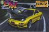 | 1:24 | Aoshima | Mazda RX-7 FD3S Drift Machine. From the street tune series. | Box | 036853 #12 | 🇯🇵 |
| WANTED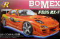 | 1:24 | Aoshima | Mazda RX-7 FD3S Bomex. From the S Package Ver. R series. | Box | 80-SP | 🇯🇵 |
| WANTED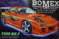 | 1:24 | Aoshima | Mazda RX-7 FD3S Bomex. | Box | ??? | 🇯🇵 |
WANTED |
1:24 | Aoshima | Mazda RX-7 FD3S ＲＥ雨宮. From the "S Package Ver. R" series. | Box | No. 96 | 🇯🇵 |
| WANTED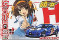 | 1:24 | Aoshima | Mazda RX-7 FD3S Haruhi. From the "Ita-Sha" series. | Box | 04140 | 🇯🇵 |
WANTED |
1:24 | Aoshima | March 75 S Rotary. From the Circuit Machine Series car #5. This is a red car, green stripes. | Box | 3G-71-500 #4 | 🇯🇵 |
✓ HAVE |
1:24 | Aoshima | Mazda MX-5 Roadster (Miata) 1800 RS The best car 1998, this car is in white with standard factory wheels. | 32x20.5x6.5 | 0020982 20 | 🇯🇵 |
✓ HAVE |
1:24 | Aoshima | Mazda MX-5 Roadster (Miata) Mazdaspeed A-Spec Version with spoilers and skirts mag wheels. | 32x20.5x6.5 | 0020999 38 | 🇯🇵 |
| ✓ HAVE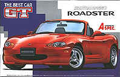 | 1:24 | Aoshima | Mazda MX-5 Roadster (Miata) Mazdaspeed A-Spec version with spoiler, skirts and Mag wheels. | 32.5x21.5x7 | 0022320 # 51 | 🇯🇵 |
| ✓ HAVE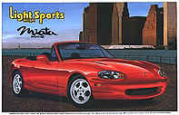 | 1:24 | Aoshima | Mazda MX-5 Roadster (Miata). Light Weight Sports Series LHD Miata with hard & soft tops. | 32x20.5x6.5 | 0021958 #5 | 🇯🇵 |
| ✓ HAVE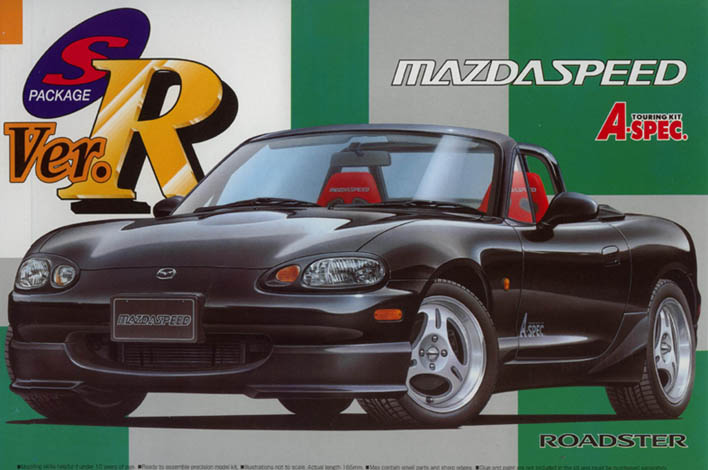 | 1:24 | Aoshima | Mazda MX-5 Roadster ( Miata) Mazdaspeed Touring kit A spec. S package Ver. R series | 32.5x21.5x7 | 0024003 #62 | 🇯🇵 |
✓ HAVE |
1:24 | Aoshima | Mazda AutoExe NB8C Roadster (Miata) S package Ver. R series. | 32.5x21.5x7 | 0030950-1800 #76 | 🇯🇵 |
| WANTED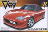 | 1:24 | Aoshima | Mazda Garage Very NB8 Roadster (Miata) S package Ver. R series. | 32.5x21.5x7 | 040904-1800 #55 | 🇯🇵 |
| WANTED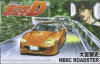 | 1:24 | Aoshima | Mazda NB8 Roadster (Miata) Intial D. | 32.5x21.5x7 | No. 4 | 🇯🇵 |
| WANTED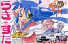 | 1:24 | Aoshima | Mazda MX-5 Roadster 1800 RS. From The "Ita-Sha" series | 32.5x21.5x7 | 04343 | 🇯🇵 |
| WANTED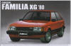 | 1:24 | Aoshima | Mazda Familia XG 1980 from "The Best Car Vintage" series . | ??? | 037805-1500 #73 | 🇯🇵 |
| Arii | ||||||
| ✓ HAVE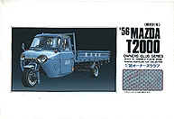 | 1:32 | Arii | `56 Mazda T2000, heavy 3 wheel truck. | 22.5x15.5x4.5 | 41018-600 #18 | 🇯🇵 |
| WANTED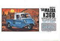 | 1:32 | Arii | `58 Mazda K360 Owners Club Series. | 22.5x15.5x4.5 | 41018-600 #17 | 🇯🇵 |
| ✓ HAVE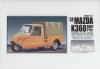 | 1:32 | Arii | `58 Mazda K360 Roof Type. | 22.5x15.5x4.5 | 21065 -600 # 45 | 🇯🇵 |
| ✓ HAVE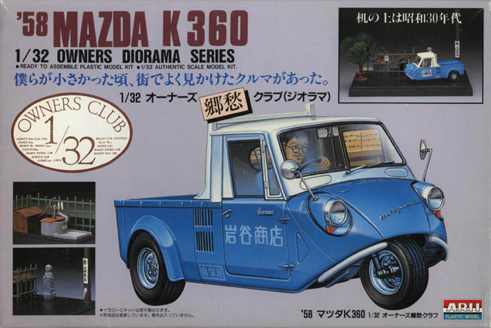 | 1:32 | Arii | `58 Mazda K360 Owners Diorama series. | 27.5x18.5x5.5 | 41072-1000 #2 | 🇯🇵 |
✓ HAVE |
1:32 | Arii | `60 Mazda R360 Owners Club Series . | 22.5x15.5x4.5 | 41015-600 #15 | 🇯🇵 |
✓ HAVE |
1:32 | Arii | `60 Mazda R360 Owners Club Series diorama . | 27.5x18.5x5.5 | 41079-1000 #9 | 🇯🇵 |
✓ HAVE |
1:32 | Arii | Japan Grand Prix Mazda R360 coupé racing. This little Mazda competed in the 1963 Japan Grand Prix. | 22.5x15.5x4.5 | 21064-600 #44 | 🇯🇵 |
| ✓ HAVE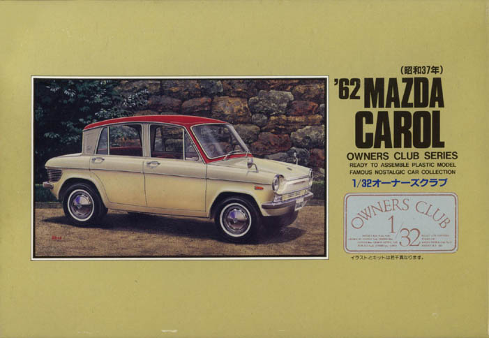 | 1:32 | Arii | `62 Mazda Carol Owners Club Series This is 1 st version of the Arii Owner's Club Series. | 22.5x15.5x4.5 | 41008-600 #8 | 🇯🇵 |
✓ HAVE |
1:32 | Arii | `62 Mazda Carol Owners Club Series. This is the same model as above, but a newer re-boxed version. | 22.5x15.5x4.5 | 41008-600 #8 | 🇯🇵 |
| WANTED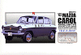 | 1:32 | Arii | `62 Mazda Carol Police car. This is from the "Micro Ace series". | 22.5x15.5x4.5 | 47069 #64 | 🇯🇵 |
| ✓ HAVE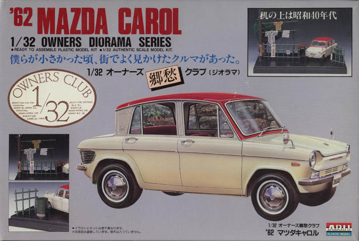 | 1:32 | Arii | `62 Mazda Carol Owners Diorama series. | 27.5x18.5x5.5 | 41078-1000 #8 | 🇯🇵 |
✓ HAVE |
1:32 | Arii | Japan Grand Prix Mazda Carol racing. This little Mazda competed in the 1964 Japan Grand Prix. | 22x15x4.5 | 21062-600 #42 | 🇯🇵 |
| WANTED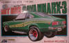 | 1:20 | Arii | Mazda RX-3 Hotrod. This is the same as Kit #AR125-B, but is the RX-3 coupé version. | Box | ??? | 🇯🇵 |
| WANTED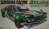 | 1:24 | Arii | Mazda RX-3 Savanna Alitalia racing model. | Box | ??? | 🇯🇵 |
WANTED |
1:24 | Arii | Mazda Savanna GT (RX-3) racing Version. From The Racing Car series | Box | ??? | 🇯🇵 |
| WANTED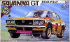 | 1:24 | Arii | Mazda Savanna GT (RX-3) racing Version | Box | 500-46-B | 🇯🇵 |
| WANTED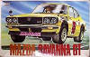 | 1:24 | Arii | Mazda Savanna GT (RX-3) racing Version. This is the same as the above kit, but with new box graphics. | Box | 800-47-B | 🇯🇵 |
| WANTED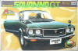 | 1:24 | Arii | Mazda Savanna GT RE-12 (RX-3) . This model is from the Hard Top Series . | Box | 500-45-B | 🇯🇵 |
WANTED |
1:24 | Arii | Mazda RX-3 Savanna GT RE-12. This model is from the Hard Top Series | Box | ??? | 🇯🇵 |
WANTED |
1:24 | Arii | Mazda RX-3 Savanna Rotary12 (RE-12) from the " Special Stock Car" series. | Box | ??? | 🇯🇵 |
| WANTED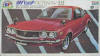 | ?? | Arii | Mazda RX-3 Savanna Rotary12 (RE-12) | Box | ??? | 🇯🇵 |
WANTED |
1/24 | Arii | Mazda RX-3 Savanna GT (RE-12) | Box | ??? | 🇯🇵 |
| WANTED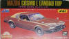 | 1:32 | Arii | Mazda Cosmo AP Limited Landau top. Mazda Cosmo (RX-5) with a half vinyl roof . | Box | AR102-2 | 🇯🇵 |
WANTED |
1:28 | Arii | Mazda Cosmo AP (RX-5) Limited I saw this one on a Japanese web site but there wasn't much info about it. | Box | ??? | 🇯🇵 |
WANTED |
?? | Arii | Mazda Cosmo AP Limited. From the "Speciality Car" series. | Box | ??? | 🇯🇵 |
| WANTED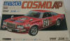 | ?? | Arii | Mazda Cosmo AP Limited. The race version of the above model. | Box | ??? | 🇯🇵 |
WANTED |
1:28 ?? | Arii | Mazda Cosmo AP Limited Special Turbo. From the "Racing Type" series. | Box | ??? | 🇯🇵 |
WANTED |
1:28 | Arii | Mazda Cosmo AP Limited RX-5 coupé. | Box | AR203-B | 🇯🇵 |
WANTED |
1:20 | Arii | Mazda Cosmo AP Rotary Hotrod. This model is the Hotrod version of the RX-5. | Box | AR125-B | 🇯🇵 |
WANTED |
1:24 | Arii | Mazda RX-7 SA Racing. 1st generation RX-7 in race outfit. | Box | AR69C-500 | 🇯🇵 |
WANTED |
1:24 | Arii | Mazda Savanna Rx-7 SA. This was the 1st generation RX-7. | Box | AR123-D | 🇯🇵 |
WANTED |
1:24 | Arii | Mazda Savanna RX-7 GT | Box | AR-101F | 🇯🇵 |
WANTED |
??? | Arii | Mazda Savanna RX-7 SA. This is a model from the "Miracle Tuning Car Roman" series. And is a deformed scale, I belive. | Box | ???#7 | 🇯🇵 |
| WANTED | 1:24 | Arii | Mazda Savanna Rx-7 Limited. The same as kit #AR123-D, but this is the top of the line model Rx-7. | Box | AR122-C | 🇯🇵 |
| WANTED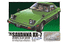 | 1:24 | Arii | Mazda Savanna RX-7. This model is from the "Owner Club" Series | Box | 21153 | 🇯🇵 |
✓ HAVE |
1:32 | Arii | Mazda 1991 έfini RX-7 W Owners Club Series | Box | 91064-600 #36 | 🇯🇵 |
| WANTED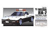 | 1:32 | Arii | Mazda 1991 έfini RX-7 Japanese Patrol Car. From the "Owners Club Series" | Box | 91064-600 #36 | 🇯🇵 |
| ✓ HAVE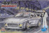 | 1:32 | Arii | έfini RX-7 "Wangan Midnight" Street race version of the 3rd generation | Box | 86084 #4 | |
WANTED |
1:24 | Arii | Mazda 757C Le Mans Group C racer Mazda Speed #202 (1987) WEC JAPAN | Box | AR713-1200 | 🇯🇵 |
| ✓ HAVE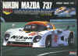 | 1:24 | Arii | Mazda 737 Le Mans Group C racer with transparent body and electric motor | Box | AR273-1200 #3 | 🇯🇵 |
| ARK | ||||||
WANTED |
1/96 | ARK | Mazda Familia 1500 XG & Savanna RX-7. This is a great little kit it has both the familia and the RX-7 in the one kit. I found this kit on a Japanese site. | Box | 112 #200 | 🇯🇵 |
| Bandai | ||||||
WANTED |
?? | Bandai | Mazda Familia 323 (I know very little about this model as I found it on a Japanese web site. If you can help with any of the detail of this kit please email me contact@drmaz.com ) | Box | ?? No.2 | 🇯🇵 |
WANTED |
1:20 | Bandai | Mazda Familia Rotary Coupe (R100) Nice model of the little Mazda rotary coupè | Box | 3306 | 🇯🇵 |
| WANTED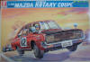 | 1:20 | Bandai | Mazda Familia Rotary Coupe (R100). This is a nice model of a Rally version R100 rotary coupè, car #12 (I am unsure what rally it is from as I found this kit in a Japanese model Magazine) | Box | ??? | 🇯🇵 |
WANTED |
1:20 | Bandai | Mazda Capella Rotary Coupè (RX-2) This is the Japanese version RX-2 Coupè, with the square headlights. This kit is extremely detailed it has opening doors a very well detailed engine and interior. | Box | 8109 | 🇯🇵 |
| WANTED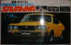 | 1:20 | Bandai | Mazda Savanna coupè GS-II. This is the Japanese version RX-3 Coupè, with 10A wankel rotary engine. This is another extremely well detailed kit it has opening doors a very well detailed engine and interior. | Box | 35261 | 🇯🇵 |
WANTED |
1:20 | Bandai | Mazda RX-3 Savanna GSII Coupé. This is a very detailed model, it has opening bonnet, boot, drivers door & passengers door. | Box | 8115 | 🇯🇵 |
| WANTED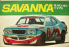 | 1:20 | Bandai | Mazda Savanna coupè Racing Type. This is the racing version of kit #35261. | Box | ??? | 🇯🇵 |
WANTED |
1:20 | Bandai | Mazda Luce AP Hardtop (RX-4 Coupè) | Box | 8133 | 🇯🇵 |
| WANTED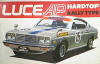 | 1:20 | Bandai | Mazda Luce AP Hardtop (RX-4 Coupè) Rally Edition. | Box | 8140 | 🇯🇵 |
| WANTED | 1:20 | Bandai | Mazda "Big Rotary Luce hardtop GSII" (RX-4). | Box | 8122:1200 | 🇯🇵 |
| WANTED | 1:20 | Bandai | Mazda Cosmo AP (RX-5). This is yet another, well detailed kit from Bandai with many opening parts and even a rectangle tail pipe just like the original. | Box | 8130 #5 | 🇯🇵 |
| WANTED | 1:20 | Bandai | Mazda Cosmo AP (RX-5). This is the Racing Version of kit #8130 No. 3 | Box | 8134 #1 | 🇯🇵 |
| WANTED | 1:20 | Bandai | Mazda Savanna RX-7 SA (Same model as NAGANO of 1st generation) | Box | 35252 | 🇯🇵 |
✓ HAVE |
1:20 | Bandai | Mazda Cosmo 4 drs. HT Rotary LTD With retractable headlights (929 4 drs. hardtop). This is a wonderful kit it has an option to add a electric motor (not included), working head and tail lights and even a light for the dash!!!(wire included) cool!!! | Box | 35273 - 1200 | 🇯🇵 |
✓ HAVE |
1:20 | Bandai | Mazda Luce 4 drs. HT Rotary LTD With normal headlights (929 4 drs. hardtop) This is a wonderful kit it has an option to add a electric motor (not included), working head and tail lights and even a light for the dash!!!(wire included) cool!!! | Box | 35274 -1200 | 🇯🇵 |
| Blue Tank | ||||||
✓ HAVE |
1:28 | Blue Tank | Mazda Savana Rx-7 SA22. Comes with electric motor. | Box | TK-8822 | |
✓ HAVE |
1:28 | Blue Tank | Mazda Savana RX-7 SA Racing version. This is the same kit #TK-8809 but in race trim (I think it is meant to be the Daytona Rx-7 SA) | Box | TK-8820 | |
WANTED |
1:28 | Blue Tank | Shiden RE13B Group C racer with Mazda Rotary engine. This is a repackaged Nitto kit #667. | Box | TK-8809 | |
| Central Models | ||||||
WANTED |
1:32 | Central Models | Mazda Savanna RX-3 GSII. I know very little about this model. | Box | ??? | 🇯🇵 |
WANTED |
1:32 | Central Models | Mazda Savanna RX-3 GSII. I know very little about this model. | Box | ??? | 🇯🇵 |
| Crown | ||||||
| WANTED | ?? | Crown | Mazda Cosmo Sort On the box cover is a picture od a L10B but the instructions show a L10A. | Box | 136-120 | 🇯🇵 |
WANTED |
1:35 | Crown | Mazda Cosmo Sport L10A 1st edition of the 110S (Clockwork series of models) 1967 | Box | C136-100 | 🇯🇵 |
| WANTED | 1:24 | Crown | Mazda Capella Rotary Coupè GS (RX-2). This is a motorized kit . | Box | C314(??) | 🇯🇵 |
| WANTED | 1:28 | Crown | Mazda Capella Rotary Coupè GS (RX-2). | Box | (??) | 🇯🇵 |
| WANTED | 1:28 | Crown | Mazda RX-3 Savanna Red on cover latest version of the RX-3. | Box | C574-300 | 🇯🇵 |
WANTED |
1:28 | Crown | Mazda RX-3 Savanna racing version. | Box | (??) | 🇯🇵 |
WANTED |
1:28 | Crown | Mazda RX-3 Savanna racing version. From the 爆走 Bakusō Racer Series. | Box | 526-400 | 🇯🇵 |
WANTED |
1:35 | Crown | Mazda Savanna RX-7 SA Limited. With wind-up motor 1979 | Box | C518-200 #6 | 🇯🇵 |
WANTED |
Deformed | Crown | Mazda Familia 1500 XG. | Box | ??? | 🇯🇵 |
| Daiwa | ||||||
| WANTED | ??? | Daiwa | Mazda Savanna RX-3 GT. This is the only Daiwa Mazda model I have seen to date. | Box | ??? | 🇯🇵 |
| Delta | ||||||
| WANTED | 1:28 | Delta | Mazda Savanna Rx-7 SA22. This is a reboxed Nitto kit #664. | Box | TK-8820 | ? |
| WANTED | 1:28 | Delta | Mazda Savanna RX-7 SA racing. This is a reboxed Nitto kit (#666) IMSA racer. | Box | TK-8822 | ? |
| Dexim | ||||||
| WANTED | 1:20 | Dexim | Mazda Savanna RX-7 SA Racing. 1st generation RX-7 in race trim. | Box | 3005 | ? |
| Double - U | ||||||
| WANTED | 1:32 | Double - U | Mazda RX-7 FC Initial D. This is a unauthorized (cheap rip off) Chinese copy of Aoshimas 'Initial D' series #02. This kit includes a electric motor. | Box | 99800 | |
| WANTED | 1:32 | Double - U | Mazda RX-7 FD Initial D. This is a unauthorized (cheap rip off) Chinese copy of Aoshimas 'Initial D' series #04. This kit includes a electric motor. | Box | 99802 | |
| Doyusha | ||||||
WANTED |
1:32 | Doyusha | This is a kit of the first Mazda Cosmo 110S. This kit has a wind up motor. | Box | MC-206 #3 | 🇯🇵 |
WANTED |
1:32 | Doyusha | This is a rebuild of kit MC-206 #3 but this time it is a Japanese Police car. This kit also has a wind up motor. | Box | MC-201 #6 | 🇯🇵 |
WANTED |
1:20 | Doyusha | "The 1972 Mazda Savanna coupé GSII". RX-3 coupé (not very detailed) | Box | NH 9-1200 #9 | 🇯🇵 |
| ✓ HAVE | 1:20 | Doyusha | "The 1976 MAZDA COSMO AP". RX-5 coupé RHD Nostalgic Heroes Series. | Box | NH12-1200 #12 | 🇯🇵 |
| WANTED | 1:24 | Doyusha | Mazda RX-5 Cosmo AP Street racer (model Kit from 1976) | Box | KM600-6 #6 | 🇯🇵 |
| Eidai Grip | ||||||
WANTED |
1:24 | Eidai Grip | Mazda Cosmo AP (RX-5) Racing type with the racing number 6. | Box | ??? | 🇯🇵 |
WANTED |
1:24 | Eidai Grip | Mazda Cosmo AP (RX-5) Racing type with the racing number 93. | Box | 474-600 | 🇯🇵 |
| Entex | ||||||
WANTED |
1:20 | Entex | Mazda RX-7 SA. Reboxed Nitto kit I think. | Box | 09503 | 🇺🇸 |
| WANTED | 1:20 | Entex | Mazda RX-2 Coupè. Made exclusively for Entex by Bandai. | Box | 08333 | 🇺🇸 |
WANTED |
1:20 | Entex | Mazda RX-3 Coupé. This is another kit made by Bandai for Entex. | Box | 08074 (08470?) | 🇺🇸 |
WANTED |
1:20 | Entex | "Mazda RX-4 Sports Coupè" Hardtop (Luce AP). Very nice and precise model of this car, and yet again this kit is made by Bandai. | Box | 08492 | 🇺🇸 |
| WANTED | 1:20 | Entex | Mazda RX-5 (Cosmo AP) Kit made by Bandai | Box | 09041 | 🇺🇸 |
WANTED |
1:5 | Entex | Mazda RE-12A engine. This is a Look-thru model of the 12A rotary engine. | Box | 08201 | 🇺🇸 |
| ESCI/ERTL | ||||||
WANTED |
1:4 | ESCI/ERTL | Mazda Wankel 10A. Look-thru model of the 10A Mazda rotary. | Box | 3400-E10EO | ? |
| Fujimi | ||||||
| WANTED | 1:48 | Fujimi | Mazda Familia Rotary Coupé R100. From the Mini-Pet Series part of set of 4 cars '70 | Box | ????? 8 #2 | 🇯🇵 |
| WANTED | 1:24 | Fujimi | Mazda Savanna RX-3 GT early type (10A rotary engine). | Box | 03629 ID-41 | 🇯🇵 |
WANTED |
1:24 | Fujimi | Mazda Savanna RX-3 GT late type (12A rotary engine). | Box | 03630 ID-42 | 🇯🇵 |
| WANTED | 1:24 | Fujimi | Mazda RX-3 Savanna GSII. This Model is from the "Nostalgic Racer" Series. | Box | 04321 | 🇯🇵 |
WANTED |
1:24 | Fujimi | Mazda RX-3 Savanna GSII. This Model is from the "Nostalgic Heroes" Series. | Box | 04323 | 🇯🇵 |
| WANTED | 1:24 | Fujimi | Mazda RX-3 Savanna GSII. I belive that this is a remake of an earlier model as Fujimi used to produce this range for the RX-7 Also. | Box | 18292 | 🇯🇵 |
| WANTED | 1:24 | Fujimi | Mazda Savanna RX-3 GT early model (10A rotary engine) with upgrade parts. This Model is from the "Real Sports Car" Series. | Box | 18896 | 🇯🇵 |
WANTED |
1:24 | Fujimi | Mazda Savanna RX-3 GT Late Type. This Model is from the "Inch Up" Series. | Box | 03769 No. 109 | 🇯🇵 |
| ✓ HAVE | 1:24 | Fujimi | Mazda Savanna RX-7 SA Limited 1st type street version with electrical motor. | 29x16.2x5 | NC1-500 | 🇯🇵 |
WANTED |
1:24 | Fujimi | Mazda Savanna RX-7 SA Super Turbo version. This is the turbo version of the above model ( Savanna RX-7 SA Limited NC1-500 ) it even has the same kit#. | Box | NC1-500 | 🇯🇵 |
| WANTED | 1:24 | Fujimi | Mazda Savanna RX-7 SA Limited 1st type street version with electrical motor. | Box | 00306 SM-6 | 🇯🇵 |
WANTED |
1:24 | Fujimi | Mazda Savanna RX-7 SA Racing Race version car number 3, 1st generation RX-7. | Box | 00307 SM-7 | 🇯🇵 |
WANTED |
1:24 | Fujimi | Mazda Savanna RX-7 SA Black Black version of the 1st generation, with lights & motor. | Box | 00310 SM-10 | 🇯🇵 |
WANTED |
1:24 | Fujimi | Mazda Savanna RX-7 SA Black Black version of the 1st generation, with lights & motor. Reboxed version of the 00310 SM-10 | Box | ???? | 🇯🇵 |
WANTED |
1:24 | Fujimi | Mazda Savanna RX-7 SA, very similar to kit# 00307 SM-7. | Box | ??? ID-4 | 🇯🇵 |
WANTED |
1:24 | Fujimi | Mazda Savanna RX-7 SA 13B turbo. This is a remake of the above model. | Box | ??? | 🇯🇵 |
| WANTED | 1:24 | Fujimi | Mazda Savanna RX-7 "Lame Machine" (got to love that name ) | Box | ??? | 🇯🇵 |
WANTED |
1:24 | Fujimi | Mazda Savanna RX-7. This is the Thoge drift version | Box | 04555 | 🇯🇵 |
WANTED |
1:24 | Fujimi | Mazda Savanna RX-7. This is a racing version | Box | 06323 | 🇯🇵 |
WANTED |
1:48 | Fujimi | Mazda RX-7 FC with wind up motor (pull back) | Box | KT56-400 | 🇯🇵 |
WANTED |
1:48 | Fujimi | Savanna RX-7 Nice model of the second generation '86. From The Inch Up Mini Series. | Box | 00006 IM6 #14??? | 🇯🇵 |
WANTED |
1:48 | Fujimi | Mazda Savanna RX-7 FC. I know very little about this model. | Box | IM36 | 🇯🇵 |
| WANTED |
1:48 | Fujimi | Mazda Savanna RX-7 FC. I know very little about this model. The same model as above but molded in black plastic instead of white plastic. | Box | IM36 | 🇯🇵 |
| WANTED | 1:24 | Fujimi | Savanna RX-7 NEW. Blue box; car has a Ferrari like boot rear '86 | Box | 03034 ID-34 | 🇯🇵 |
| ✓ HAVE | 1:24 | Fujimi | Savanna RX-7 NEW The same, but with newer logos Fujimi '86 | Box | 03034 ID-34 | 🇯🇵 |
WANTED |
1:24 | Fujimi | Savanna RX-7 NEW Green box, normal boot with lights & motor '86 | Box | 03034 ID-34 | 🇯🇵 |
| WANTED | 1:24 | Fujimi | New Mazda R-7 FC Savanna. I believe that this is the same model kit as above but in the factory prepainted version. | Box | ??? #162 | 🇯🇵 |
WANTED |
1:24 | Fujimi | Savanna RX-7 NEW Highly Optioned Modification kit '86 | Box | ????? HC-86 | 🇯🇵 |
| ✓ HAVE | 1/24 | Fujimi | Savanna RX-7 FC3S (1985) The same, but again an other box '97 | Box | 03428 ID-29 | 🇯🇵 |
✓ HAVE |
1:24 | Fujimi | Savanna RX-7 FC3S Race version of ID-34 other decals '88 | Box | 04009 -9 | 🇯🇵 |
| ✓ HAVE | 1:24 | Fujimi | Savanna RX-7 FC3S Again an other version with AMG wheels '88 | Box | 04534 D-4 | 🇯🇵 |
| WANTED | 1:24 | Fujimi | Mazda Savanna RX-7 FC. Yet another version of the FC RX-7. There has been some minor mods made to this kit. | Box | 04550 ?? | 🇯🇵 |
| ✓ HAVE | 1:24 | Fujimi | Mazda Savanna RX-7 FC3S Face lifted 2nd generation Ryousuku Takahashi edition. | Box | 18325 D-5 | 🇯🇵 |
WANTED |
1:24 | Fujimi | Mazda Savanna RX-7 FC3S . | Box | 18358 | 🇯🇵 |
| WANTED | 1/24 | Fujimi | Mazda Savanna RX-7 18 inch Low Prof Spoilers and bigger brakes and 18" wheels. | Box | 18014 LP-14 | 🇯🇵 |
| WANTED | 1:24 | Fujimi | Mazda Savanna RX-7 '88 Super Inch Spoilers and other wheels otherwise the same as ID-34. | Box | 05110 SI-110 | 🇯🇵 |
✓ HAVE |
1:24 | Fujimi | Mazda Savanna RX-7 FC3S"Just" Just tuning black car with red wheels '96 | Box | 18209 JT-8 | 🇯🇵 |
| WANTED | 1:24 | Fujimi | Mazda Savanna RX-7 FC3S GP Super Drift version Japan. | Box | 18110 GP-6 | 🇯🇵 |
WANTED |
1:24 | Fujimi | Mazda RX-7 FC Special Edition 2nd generation with enormous rear spoiler | Box | 18407 SE-7 | 🇯🇵 |
| WANTED | 1:24 | Fujimi | Mazda RX-7 FC Police car. | Box | ??? | 🇯🇵 |
| ✓ HAVE | 1:24 | Fujimi | Mazda RX-7 FC Initial D kit. I include a resin figure of the a Takahashi brothers and a list of extras not usally seen in kits. | Box | 18348 | 🇯🇵 |
WANTED |
1:24 | Fujimi | Mazda Savanna RX-7 FC3S. This model has a separate detailed engine. | Box | 03683 | 🇯🇵 |
| ✓ HAVE | 1:24 | Fujimi | έfini RX-7 FD "Initial D ANIMATION" This kit has a 1/87 HO scale Mazda RX-7 FD diecast metal model included. | Box | 18341 | 🇯🇵 |
| ✓ HAVE | 1:24 | Fujimi | New Mazda RX-7 FD3S Type RS '99 Face-lifted 3rd generation model. This model is from the "Inch Up" series. | 32x20.5x6.5 | 03464 ID-36 | 🇯🇵 |
| WANTED | 1:24 | Fujimi | New Mazda RX-7 FD3S Type RS '99 Face-lifted 3rd generation model. | 32x20.5x6.5 | 18555 #5 | 🇯🇵 |
| ✓ HAVE | 1:24 | Fujimi | New Mazda RX-7 FD3S Type RS '99 Face-lifted 3rd generation model. | 32x20.5x6.5 | 04046 #30 | 🇯🇵 |
WANTED |
1:24 | Fujimi | New Mazda RX-7 FD3S Face-lifted 3rd generation model. This was made for the US market | 32x20.5x6.5 | 03653 ID-U | 🇯🇵 |
| WANTED | 1:24 | Fujimi | New Mazda RX-7 FD3S Type RZ. | Box | 03513 #13 | 🇯🇵 |
| ✓ HAVE | 1:24 | Fujimi | New Mazda RX-7 FD3S Type R Bathurst model. This was a limited edition RX-7 Mazda produced to celebrate the outstanding success Mazda had at the Australian Bathurst 12hr endurance race. | Box | 03533 #SPO | 🇯🇵 |
WANTED |
1:24 | Fujimi | Mazda RX-7 FD3S Spirit R Type A. This model is from the "Inch Up" Series | Box | 03726 | 🇯🇵 |
✓ HAVE |
1:24 | Fujimi | έfini RX-7 FD Street race version of 3rd generation Keisuke Takahashi | Box | 18329 #10 | 🇯🇵 |
WANTED |
1:24 | Fujimi | New Mazda RX-7 FD3S Type R Bathurst model. | Box | 18817 | 🇯🇵 |
WANTED |
1:24 | Fujimi | Mazda RX-7 FD3S Japanese Police Car. | Box | 18441 | 🇯🇵 |
| WANTED | 1:24 | Fujimi | New Mazda RX-7 FD3S. This Model is from the "GTW Wing" series. | Box | 18817 | 🇯🇵 |
✓ HAVE |
1:24 | Fujimi | Garage TT Mazda RX-7 FD3S. This is the "Garage TT" race car | 32x20.5x6.5 | 18775 AG-34 | 🇯🇵 |
| ✓ HAVE | 1:24 | Fujimi | Mazda RX-7 FD3S RE Amemiya µ Boost up 7 SPL. This model is from the "Racing Star" series. | Box | 18908 #26 | 🇯🇵 |
| WANTED | 1:24 | Fujimi | Mazda RX-7 FD this car has graphics of Alicia Infans from the popular Japanese anime "Magus Tale". This model is from the "Ita-Sha" series. | Box | 18942 #03 | 🇯🇵 |
WANTED |
1:24 | Fujimi | Mazda Mazdaspeed RX-8 Type E. | 325x205x65 | 03574 ID-85 | 🇯🇵 |
| ✓ HAVE | 1:24 | Fujimi | Mazda Mazdaspeed RX-8 type S. This model is from the "Inch Up" series. | Box | 03552 | 🇯🇵 |
WANTED |
1:24 | Fujimi | Mazda Mazdaspeed RX-8 type S. This model is from the "Inch Up" series. This is the same model as the above model except the the box dose not have the gold sticker on it. | Box | 03552 | 🇯🇵 |
| WANTED | 1:24 | Fujimi | Mazda RX-8 Hydrogen RE. This model is from the "Inch Up" series. | Box | 03598 | 🇯🇵 |
WANTED |
1:24 | Fujimi | Mazda RX-8 Mazdaspeed Version II. This model is from the "Racing Star" series. | Box | 03620 | 🇯🇵 |
WANTED |
1:24 | Fujimi | Mazda RX-8 Sports Prestige Limited. This model is from the "Inch Up" series. | Box | 03628 | 🇯🇵 |
WANTED |
1:24 | Fujimi | Mazda RX-8 USA Custom. This model is from the "Inch Up" series. | Box | 03644 | 🇯🇵 |
| WANTED | 1:24 | Fujimi | Mazda RX-8 Hydrogen RE. This model is from the "Inch Up" series. This is a reboxed version of Kit #0598 | Box | 03778 | 🇯🇵 |
| WANTED | 1:24 | Fujimi | Mazda RX-8 Japanese Patrol Car. This model is from the "Special Vehicle" series. | Box | 18427 | 🇯🇵 |
| WANTED | 1:24 | Fujimi | Mazda RX-8 Veilside. This model is from the "Racing Star" series. | Box | 18866 | 🇯🇵 |
| WANTED | 1:24 | Fujimi | Mazda RX-8 Veilside Ver. 1 Model SE3P. | Box | 038056 ID-138 | 🇯🇵 |
| WANTED | 1:24 | Fujimi | Mazda RX-8 RE Amemiya µ RX-8 Enkei by GREDDY . | Box | 18868 #20 | 🇯🇵 |
WANTED |
1:24 | Fujimi | Mazda Mazdaspeed RX-8 A Spec. This model is from the "Racing Star" series. | Box | 18880 | 🇯🇵 |
WANTED |
1:24 | Fujimi | Mazda RX-8 GT Wing. This model is from the "GT Wing" series. | Box | 18893 | 🇯🇵 |
WANTED |
1:24 | Fujimi | Mazda RX-8 Japanese Patrol Car. This model is from the "Patrol Car" series. | Box | 18940 | 🇯🇵 |
| WANTED | 1:24 | Fujimi | Mazda RX-8 this car has graphics from the popular Japanese anime "To Heart 2 Another day". This model is from the "Ita-Sha" series. | Box | 189413 #01 | 🇯🇵 |
| WANTED | 1:24 | Fujimi | Mazda Roadster (MX-5) 3rd Generation limited | Box | ??? | 🇯🇵 |
| WANTED | 1:24 | Fujimi | Autozam AZ-Wagon Suzuki Bus which is sold as Mazda in Japan (Autozam) '96 | Box | 03261 ID-21 | 🇯🇵 |
WANTED |
1:24 | Fujimi | Mazda Familia 323. The 1st generation FWD 323 Hatchback (GLC) | Box | 03265 | 🇯🇵 |
| WANTED | 1:24 | Fujimi | Mazda Familia 323. The 1st generation FWD 323 Hatchback (GLC). This is the same model as above, but with new box art. | Box | 03265 | 🇯🇵 |
| WANTED | 1:24 | Fujimi | Familia Europe Seen on Japanese Web Site '83 | Box | ????? | 🇯🇵 |
| WANTED | 1:24 | Fujimi | Familia Europe Seen on Japanese Web Site '83 need more info | Box | ??? No. 81 | 🇯🇵 |
| WANTED | 1:24 | Fujimi | Familia 1500 XG Rally Rally Monte Carlo 1982; incl. lights and engine '82 | Box | SM 75-800 N-15 | 🇯🇵 |
WANTED |
1:24 | Fujimi | Familia 1500 XG Rally Rally Monte Carlo 1982; incl. lights and engine '82 | Box | 00009 IT-9 | 🇯🇵 |
WANTED |
1:24 | Fujimi | Familia 1500 XG Rally Rally Monte Carlo 1982; incl. lights and engine '82 | Box | ??? | 🇯🇵 |
| WANTED | 1:24 | Fujimi | Mazda Familia 323 "Lame Machine" (got to love that name ) Seen on Japanese Web Site 1983 | Box | ??? | 🇯🇵 |
WANTED |
1:24 | Fujimi | Mazda Familia 323 (Street tuned) Seen on Japanese Web Site 1983 | Box | ??? | 🇯🇵 |
WANTED |
1:24 | Fujimi | Mazda Familia 323. This is from the "Inch Up" series. | Box | ??? | 🇯🇵 |
| Gakken | ||||||
| WANTED | 1:20 | Gakken | Mazda RX-2 2 doors coupé. (1971) | Box | ??? | 🇯🇵 |
WANTED |
1:5 | Gakken | Mazda 12A Rotary engine. | 43.5x30x6 | 81588 | 🇯🇵 |
WANTED |
1:4 | Gakken | Mazda 12A Rotary engine. This kit is a Look-thru model with electric motor to turn the engine and light bulbs to act as spark plug. | 43.5x30x6 | ??? | 🇯🇵 |
| Grip | ||||||
| WANTED | 1:32 | Grip | Mazda RX-3avanna GSII 2 doors coupé. | Box | ??? | 🇯🇵 |
WANTED |
1:24 | Grip | Mazda RX-5 Cosmo AP 2 doors coupé. | Box | 424-500 | 🇯🇵 |
| Gunze Sangyo | ||||||
WANTED |
1:24 | Gunze Sangyo | Mazda RX-7 Racing JUN/MOTUL IMSA version Car #25 black/gold (1979) | Box | G-137:600 #17 | 🇯🇵 |
WANTED |
1:24 | Gunze Sangyo | Mazda Rx-7 SA Racing. This kit is the same as kit # G-137:600 #17, but an early version with different box art. | Box | G-122 | 🇯🇵 |
WANTED |
1:24 | Gunze Sangyo | Mazda Savanna RX-7 SA. This car competed IMSA. The car was white with green stripes (1978) | Box | G-113 | 🇯🇵 |
| WANTED | 1:24 | Gunze Sangyo | Mazda Familia 323. With steer of bike on roof (19??) | Box | G-910:10 #10 | 🇯🇵 |
| Hasegawa | ||||||
✓ HAVE |
1:24 | Hasegawa | Mazda Cosmo Sport 1968 Marathon De La Route (1968) | Box | HR003 : 2400 | 🇯🇵 |
✓ HAVE |
1:24 | Hasegawa | 767B Finish Line Le Mans group C '89 nr 201 GTP class '89 | Box | CC020:1200 22020 | 🇯🇵 |
WANTED |
1:24 | Hasegawa | 767B Charge Le Mans group C '89 nr 202 GTP class '89 | Box | CC018:1200 22018 | 🇯🇵 |
| WANTED | 1:24 | Hasegawa | 767B NWB Limited version with other sponsors (JSPC) nr.230 '89 | Box | SP060:1500 51560 | 🇯🇵 |
| WANTED | 1:24 | Hasegawa | Playsure Racing Mazda 767B (1989) | Box | SP088:1600 51588 | 🇯🇵 |
| WANTED | 1:24 | Hasegawa | Cosmo Sport L10B Mazda 110S from the sixties (2nd type)'68 | Box | HC002:2400 21202 2 | 🇯🇵 |
WANTED |
1:24 | Hasegawa | Cosmo Sport L10B "MAT" Mazda 110S from the Japanese TV series MAT '68 | Box | CQ001:2200 65011 | 🇯🇵 |
| WANTED | 1:24 | Hasegawa | Cosmo Sport L10B (Metal engine detail) Same as HC002 but with metal parts and photo edge parts '68 | Box | CH031:5800 51031 | 🇯🇵 |
WANTED |
1:12 | Hasegawa | Efini RX-7 type R Vintage Red 3rd generation RHD; all opening parts '92 | Box | ZZ02:19800 51052 4 | 🇯🇵 |
| WANTED | 1:12 | Hasegawa | Efini RX-7 type X Brilliant black The same, but then the cheaper version '93 | Box | ZZ03:19800 51053 1 | 🇯🇵 |
| Imai | ||||||
| WANTED | 1:32 | Imai | Mazda Cosmo Sport L10A from the Zenmai Car Series. This is a very Rare kit and one that I am looking for. | Box | ??? #7 | 🇯🇵 |
| WANTED | 1:20 | Imai | Mazda Familia Rotary coupé (R100) 1970 | Box | 3306 | 🇯🇵 |
| WANTED | 1:20 | Imai | Mazda familia Rotary Coupè (R100). This is a Rally version,car #31 (I am unsure what rally it is from as I found this kit in a Japanese model Mag) of the R100 coupè. (1970) | Box | ??? | 🇯🇵 |
| WANTED | 1:24 | Imai | Mazda Savanna RX-7 (from Superdriving Series) 1980 | Box | 525042 SS-9 | 🇯🇵 |
| WANTED | 1:24 | Imai | Mazda RX7 racing, this is a rerelease of kit #B675. | Box | ?? | 🇯🇵 |
| ✓ HAVE | 1:24 | Imai | Mazda "Savanna RX-7 1980". Tuned version of the 1st gen RX-7. This kit has an option for an electric motor and head lights but they are not included in the kit. | Box | B-2504 - 1000 | 🇯🇵 |
| ✓ HAVE | 1:24 | Imai | Mazda "Savanna Special RX-7 Black "Js sport series car Black and electric motor. This is a reboxed kit #B-2504 1000 it is modled in black plastic and not white and gold chrome wheels not sliver. | Box | 530541 1200 | 🇯🇵 |
WANTED |
1:24 | Imai | Mazda Savanna RX-7 racing (Japanese race version 1st generation RX-7) 1980 | Box | B-1788 | 🇯🇵 |
WANTED |
1:24 | Imai | Mazda RX-7 racing, this car was entered in the Japanese GT. | Box | B675 | 🇯🇵 |
| WANTED | 1:24 | Imai | Mazda Savanna RX-7 Transparant body (1st type with electric motor) 1978 | Box | 662 | 🇯🇵 |
| WANTED | 1:24 | Imai | Mazda Savanna RX-7 (As seen in IMAI '93 catalog, 1st generation RX-7) 1978 | Box | 522140 | 🇯🇵 |
WANTED |
1:24 | Imai | Mazda Familia 323 XG | Box | ??? | 🇯🇵 |
WANTED |
1:24 | Imai | Mazda Familia 323 XG I belive this is a reboxed version of the above model | Box | ??? | 🇯🇵 |
WANTED |
1:24 | Imai | Mazda Familia 323 XG. 1500 3 Door Hatch Back. | Box | ??? | 🇯🇵 |
WANTED |
1:24 | Imai | Mazda Familia 323 GLC 1st Gen. FWD "Super Driving Series" 1981 | Box | 524403 #4 | 🇯🇵 |
WANTED |
1:24 | Imai | "Mazda 323" Familia (1500 GT) 1st FWD 323 GT/GLC with sunroof 1982 | Box | 522133 | 🇯🇵 |
WANTED |
1:24 | Imai | Mazda "Familia XG 1981" (from Superdriving Series) | Box | B-2440 #5 | 🇯🇵 |
| WANTED | 1:24 | Imai | Mazda Familia 323 series gen. 1st FWD GLC "Super Sports Saloon" 1981 | Box | B-1319 | 🇯🇵 |
| Kabaya | ||||||
| WANTED | 1:38 | Kabaya | Mazda RX7 SA. This is a small scale kit it is polypropylene kit and does not require glue. | Box | ?? | 🇯🇵 |
WANTED |
1:40 | Kabaya | Mazda RX7 FD. This is a small scale kit it is polypropylene kit and does not require glue. | Box | ?? | 🇯🇵 |
WANTED |
1:40 | Kabaya | This is a model of the famous Le Mans winning Mazda 787B car #55. This is a small scale kit it is polypropylene kit and does not require glue. | Box | ?? | 🇯🇵 |
| WANTED | 1:40 | Kabaya | Mazda MX-04 prototype. This is a small scale kit it is polypropylene kit and does not require glue. | Box | ?? | 🇯🇵 |
WANTED |
1:40 | Kabaya | Eunos Roadster (Mazda MX-5). This is a small scale kit it is polypropylene kit and does not require glue. | Box | ?? | 🇯🇵 |
| Kawai | ||||||
| WANTED | 1:38 | Kawai | Mazda Savanna RX-7 Racing nr.11 IMSA racer with electrical motor, also avail. w/o motor (1978) | Box | KT100 | 🇯🇵 |
| Koga | ||||||
| WANTED | 1:32 | Koga | Mazda Capella (RX-2) Sorry no more details then this | Box | A2 200 | 🇯🇵 |
WANTED |
1:24 | Koga | Mazda Capella (RX-2) Sorry no more details then this Larger version of the above model??? | Box | A2 200 | 🇯🇵 |
| LS | ||||||
| WANTED | 1:40 | LS | Mazda RX-3 Savanna GT. Sorry no more details then this | Box | ?? | 🇯🇵 |
| WANTED | 1:24 | LS | Mazda RX-7 SA. Sorry no more details then this | Box | ?? | 🇯🇵 |
WANTED |
1:24 | LS | Mazda RX-7 SA Limited. Sorry no more details then this | Box | ?? | 🇯🇵 |
WANTED |
1:24 | LS | Mazda RX-7 SA Limited. I think that this is the same model as above reboxed. Sorry no more details then this. | Box | ?? | 🇯🇵 |
| WANTED | 1:24 | LS | Mazda RX-7 SA Limited RE12A. Sorry no more details then this | Box | ?? | 🇯🇵 |
| WANTED | 1:24 | LS | Mazda RX-7 SA Silhouete. Sorry no more details then this | Box | ?? | 🇯🇵 |
WANTED |
1:24 | LS | Mazda RX-7 Racing Gr. 5 Silhouette rally with lights and electric motor LeMans'82 | Box | KC-521 | 🇯🇵 |
WANTED |
1:24 | LS | Mazda RX-7 SA Racing Nikon Group 5 Racer. Sorry no more details then this | Box | ?? | 🇯🇵 |
| WANTED | ?? | LS | Mazda Rotary Engine Rotary engine look-thru | Box | C-520 | 🇯🇵 |
| WANTED | 1:32 | LS | Mazda Carol One of the first passenger cars from Mazda '62 | Box | 2101:400 #2 | 🇯🇵 |
✓ HAVE |
1:32 | LS | Mazda K360 three wheel truck 3 wheel pick-up from the fifties '59 | Box | 02091-400 #4 | 🇯🇵 |
| ✓ HAVE | 1:32 | LS | Mazda R360 Coupè | Box | 2087 : 300 #5 | 🇯🇵 |
✓ HAVE |
1:32 | LS | R360 coupé First little coupé from Mazda '60 | Box | 2088 : 300 #6 | 🇯🇵 |
✓ HAVE |
1:32 | LS | Mazda Carol (1962 ) | Box | 2102 : 300 #13 | 🇯🇵 |
✓ HAVE |
1:32 | LS | Mazda Carol 4 door | Box | 2102 : 300 #14 | 🇯🇵 |
| WANTED | 1:32 | LS | Japan Grand, Prix Mazda Carol Racing | Box | ??? | 🇯🇵 |
✓ HAVE |
1:32 | LS | Japan Grand Prix Mazda R360 Racing car #2 | 90x13x4 | 2151 500 #18 | 🇯🇵 |
| ✓ HAVE | 1:32 | LS | Mazda R360 Coupe (1960) | Box | #28 | 🇯🇵 |
WANTED |
Deformed | LS | Mazda R360 Coupe | Box | ??? | 🇯🇵 |
| WANTED |
Deformed | LS | Mazda R360 Coupe. Same as above but molded in yellow plastic not pink. | Box | ??? | 🇯🇵 |
| ✓ HAVE | 1:32 | LS | Mazda T-2000 Owners Club Series | Box | 02262-1000 #62 | 🇯🇵 |
| Matchbox | ||||||
| WANTED | 1:24 | Matchbox | Mazda RX-7 SA. This is a AMT kit #2004 the decals in this kit are dry rub on decals not wet decals. | Box | PK-2301 | ? |
| Marui | ||||||
WANTED |
1:24 | Marui | Mazda RX-3 Savanna Racing. This model is a race version of the RX-3 coupè. | Box | ??? | 🇯🇵 |
WANTED |
1:24 | Marui | Mazda RX-3 Savanna. | Box | ??? | 🇯🇵 |
WANTED |
1:24 | Marui | Mazda RX-3 Savanna Daytona racer. | Box | ??? | 🇯🇵 |
WANTED |
1:24 | Marui | Mazda RX-3 Savanna racing car #3. | Box | ??? | 🇯🇵 |
| WANTED | 1:24 | Marui | Mazda RX-3 Savanna racing type. | Box | MT-50R-800 | 🇯🇵 |
| WANTED | 1:24 | Marui | Mazda RX-3 Savanna street racer. | Box | ??? | 🇯🇵 |
WANTED |
1:24 | Marui | Mazda RX-3 Savanna street racer. | Box | ??? | 🇯🇵 |
| WANTED | 1:24 | Marui | Mazda Savanna RX-3 Street racer. This kit is from the the Street Racer Series Part II, it has 2 figures included in the box and is motorized. | Box | ??? | 🇯🇵 |
WANTED |
1:24 | Marui | Mazda Cosmo AP "Street Racing Machine Series". | Box | MT82-OV4:600 | 🇯🇵 |
| WANTED | 1:24 | Marui | Mazda Cosmo AP "Street Racing Machine Series". Similar to MT82-OV4:600 but in black and with different headlights. | Box | ??? | 🇯🇵 |
| WANTED | 1:24 | Marui | Mazda Cosmo AP. | Box | ??? | 🇯🇵 |
| Minicraft | ||||||
WANTED |
1:5 | Minicraft | Visible Mazda Rotary Engine. This is a rebuild of the ENTEX kit #8201. release date 1996. | Box | 11201 | ? |
WANTED |
1:5 | Minicraft | Visible Mazda Rotary Engine. This is a reboxed version of the above model. Release date 2001 | Box | 11201 | ? |
| Mitsuwa | ||||||
| WANTED | Deformed | Mitsuwa | Mazda Savanna RX-7 SA (seen at Mr. Craft, Japan) | Box | 142(?) | 🇯🇵 |
| WANTED | Deformed | Mitsuwa | Mazda RX 7 FC B Fried Chicken Dinner Mid Racer. This kit is very basic and has a fiction motor. Looks very nice when build. | 11 x 15 x 4cm | A-5 Kit No. 143 | 🇯🇵 |
✓ HAVE |
Deformed | Mitsuwa | This is the newer version of kit #143 A-5. Mazda RX 7 FC B Fried Chicken Dinner Mid Racer. This kit is very basic and has a fiction motor. Looks very nice when build. | 11 x 15 x 4cm | S-5 Kit No.615 MMR-500 | 🇯🇵 |
| WANTED | Deformed | Mitsuwa | Mazda Savanna RX-7 FC (Seen on Japanese Web Site) | 11 x 15 x 4cm | A-2 Kit No. 142 | 🇯🇵 |
| WANTED | Deformed | Mitsuwa | Mazda Savanna RX-7 FC | 11 x 15 x 4cm | A-13 Kit No.153 | 🇯🇵 |
| ✓ HAVE | Deformed | Mitsuwa | Mazda RX-7 FC Turbo I believe this is a reboxed Mitsuwa A-13 Kit No.153. This model is in a very unusual triangle box, its the first time I have seen this. | 8.3 x 8.3 x 8.3 x 15cm | A-13 Kit No.23 | 🇯🇵 |
WANTED |
Deformed | Mitsuwa | Mazda 767B Daytona race car #77. From the mid racer collection. This kit is very basic and has a fiction motor. Looks very nice when build. I think that this is the original version of kit #056 MC-600 #6 | 11 x 15 x 4cm | ?? | 🇯🇵 |
✓ HAVE |
Deformed | Mitsuwa | Mazda 767B Daytona race car #77. From the mid racer collection. This kit is very basic and has a fiction motor. Looks very nice when build. | 11 x 15 x 4cm | No.6 Kit No. 056 MC-600 | 🇯🇵 |
| WANTED | Deformed | Mitsuwa | Mazda 787B Le Mans race car #55. From the mid racer collection. This kit is very basic and has a fiction motor. Looks very nice when build. | 11 x 15 x 4cm | ?? | 🇯🇵 |
| ✓ HAVE | Deformed | Mitsuwa | Mazda 787B Le Mans race car #55. From the mid racer collection. This kit is very basic and has a fiction motor. Looks very nice when build. | 11 x 15 x 4cm | RC-1 Kit No. 621 MMR-500 | 🇯🇵 |
✓ HAVE |
Deformed | Mitsuwa | Charge Mazda 787B Le Mans race car #55. From the mid racer "Black Box "series. This kit is very basic and has a friction motor. Looks very nice when build. This is a newer version of RC-1 Kit No. 621 MMR-500. | 11 x 15 x 4cm | No.5 Kit No.055 MC-600 | 🇯🇵 |
| WANTED | 1:24 | Mitsuwa | Mazda 323 Familia 1500XG. This model is from the Multi car series. | Box | ??? | 🇯🇵 |
| WANTED | 1:24 | Mitsuwa | Mazda Familia 323/GLC (Seen on Japanese Web Site) | Box | ??? | 🇯🇵 |
| Monogram | ||||||
| WANTED | 1:24 | Monogram | Mazda RX-7 First generation with metal bumpers. | Box | 2257 | ? |
WANTED |
1:24 | Monogram | Mazda RX-7 First generation with metal bumpers 1979 (The same as above, but came out in 1997) | Box | 2257 | ? |
| WANTED | 1:25 | Monogram | Mazda RX-7 Cafe Racer AKAI sponsoring nr. 7 1979 | Box | 2277 | ? |
| Nagano | ||||||
| WANTED | 1:20 | Nagano | Mazda Cosmo Sport L10A. This kit is of the first version, the one with shorter wheelbase. | Box | 3002-350 | 🇯🇵 |
WANTED |
1 :20 | Nagano | Mazda Savanna RX-3 racer. Remote control | Box | ??? | 🇯🇵 |
WANTED |
1:20 | Nagano | Mazda Cosmo AP (RX-5). This is the same kit as Bandai kit #8130 #5 | Box | ??? | 🇯🇵 |
WANTED |
1:20 | Nagano | Mazda Savanna RX-7 SA. A nice kit of 1st generation RX-7 | Box | 3005-1200 | 🇯🇵 |
| WANTED | ?? | Nagano | Mazda 727C driven by Pierre Diudonné, Takashi Yorino, Yojiro Terada, finished in 20th place in the 1984 Le Mans 24Hr . This is one of those some deformed kits ( I do kind of like them I must say) | Box | 31 | 🇯🇵 |
WANTED |
?? | Nagano | Mazda RX-7 Savanna. This is one of those some deformed kits ( I do kind of like them I must say) | Box | 20?? | 🇯🇵 |
| WANTED | ?? | Nagano | Mazda Familia. This is one of those some deformed kits ( I do kind of like them I must say) | Box | ?? | 🇯🇵 |
WANTED |
1:20? | Nagano | Mazda Familia Turbo Super Silhoutte (323). This kit has a pull back motor. It was seen on Japanese Web site. | Box | ??? | 🇯🇵 |
| Nakamura | ||||||
WANTED |
1:20 | Nakamura | Mazda "New Cosmo Sport" L10B. This is a wonderful kit with excellent detail electric motor, working head and tail lights. The kit was made in the late 60s. | Box | KNS 0045 | 🇯🇵 |
WANTED |
1:20 | Nakamura | Mazda Cosmo Sports. | Box | ??? | 🇯🇵 |
WANTED |
1:20 | Nakamura | Mazda Savanna Rx-3 later model 12A. | Box | ??? | 🇯🇵 |
WANTED |
1:30 | Nakamura | Mazda Savanna RX-3 GS II 12A. | Box | ??? | 🇯🇵 |
WANTED |
1:30 | Nakamura | Mazda Savanna RX-3 coupe GS II. | Box | ??? | 🇯🇵 |
WANTED |
1:30 | Nakamura | Mazda Savanna RX-3 coupe GS II. From the Kokusansha series. | Box | ??? | 🇯🇵 |
WANTED |
1:20 | Nakamura | Mazda Savanna RX-3 GS II Racing | Box | ??? | 🇯🇵 |
WANTED |
1:20 | Nakamura | Mazda Cosmo AP RX-5. | Box | ??? | 🇯🇵 |
WANTED |
1:20 | Nakamura | Mazda Cosmo AP RX-5. | Box | ??? | 🇯🇵 |
| Namco | ||||||
✓ HAVE |
Deformed | Namco | Mazda RX-7 FC Turbo I believe this is a reboxed Mitsuwa Kit #153 A-13. This model is in a very unusual triangle box, its the first time I have seen this. | Box | No. 023 A-13 | 🇯🇵 |
| Nichimo | ||||||
| WANTED | 1:24 | Nichimo | Mazda Cosmo Sport L10B (2nd) version to build with or w/o electric motor 1968 | Box | HC-2401 | 🇯🇵 |
| WANTED | 1:20 | Nichimo | Mazda Cosmo Sport L10B. This is a great kit it includes an electric motor that is neatly hidden away in the 10A Rotary engine very cool!! | Box | MC-2092 | 🇯🇵 |
| WANTED | 1:20 | Nichimo | Mazda Cosmo Sport L10B. | Box | ??? | 🇯🇵 |
WANTED |
1:24 | Nichimo | Mazda Cosmo Sport L10B. From the "Zeppan" Series. | Box | ZP-2404 #4 | 🇯🇵 |
WANTED |
1:24 | Nichimo | Mazda Cosmo Sport L10B. From the " Vintage Car Club " Series. | Box | ??? | 🇯🇵 |
| WANTED | 1:24 | Nichimo | Mazda Savanna RX-3 GT. RX-3 cp* racing with electric motor. (1972) | Box | GW-2402 | 🇯🇵 |
| WANTED | 1:24 | Nichimo | Mazda Savanna RX-3 GT. See also GW-2402. (1972) | Box | MT-2403 | 🇯🇵 |
WANTED |
1:24 | Nichimo | Mazda Savanna RX-3 from the "Street Power" series. | Box | SP-2422 | 🇯🇵 |
WANTED |
1:24 | Nichimo | Mazda Savanna RX-3 GT from the "Street Power" series. . | Box | 2158 | 🇯🇵 |
| WANTED | 1:24 | Nichimo | Yet an other Mazda Savanna RX-3 GT シャコタン (shakotan) from the "Street Power" series. | Box | ??? | 🇯🇵 |
WANTED |
1:24 | Nichimo | Mazda Savanna RX-3 GT ヒップアップ (hip up) I have been told by my Japanese friends that this means hotted up. | Box | ??? | 🇯🇵 |
WANTED |
1/24 | Nichimo | Mazda Savanna RX-3 ギンギラボディ Gingirabodi (I believe this means something like lame) Has many options to choose from. | Box | ??? | 🇯🇵 |
WANTED |
1:24 | Nichimo | Mazda Savanna RX-3 from the "World Wide Worthy Car Collection" series. | Box | ??? #20 | 🇯🇵 |
| WANTED | 1:24 | Nichimo | Mazda Savanna RX-3 Body Down Type Race version from the RX-3 coupé (1978) | Box | SP-2415 | 🇯🇵 |
WANTED |
1:24 | Nichimo | Mazda Savanna RX-3 Savanna GT Race No.9. | Box | ??? | 🇯🇵 |
WANTED |
1:24 | Nichimo | Mazda Savanna RX-3 Savanna GT Race No.9. This is a remake of the above model. | Box | ??? | 🇯🇵 |
WANTED |
1:24 | Nichimo | Mazda Savanna RX-3 Savanna GT Race No.9. This is yet another remake of the above model. | Box | ??? | 🇯🇵 |
| WANTED |
1:24 | Nichimo | Mazda Savanna RX-3. From the " Vintage Car Club " Series. | Box | ??? | 🇯🇵 |
| WANTED | 1:28 | Nichimo | Mazda Cosmo AP Limited. Nice kit of the RX-5 coupe 1976 | Box | MH-2808 | 🇯🇵 |
| WANTED | 1:28 | Nichimo | Mazda Cosmo AP Limited. Nice kit of the RX-5 coupe 1976 | Box | ?? -2808 | 🇯🇵 |
| WANTED | 1:28 | Nichimo | Mazda Cosmo AP Limited. I think this is a rebox of kit #MH-2808 | Box | ??? | 🇯🇵 |
WANTED |
1:28 | Nichimo | Mazda Cosmo Limited . This is the racing version of kit MH-2808 | Box | ??? | 🇯🇵 |
WANTED |
1:28 | Nichimo | Mazda Cosmo RE Limited. No details available on this model please email me if you know more a b out this model. | Box | MH-2812 | 🇯🇵 |
WANTED |
1:24 | Nichimo | Mazda Savanna RX-7 1978. from the "World Wide Worthy Car Collection" | Box | ??? #11 | 🇯🇵 |
WANTED |
?? | Nichimo | Mazda Savanna RX-7 1978 remote control. | Box | ??? | 🇯🇵 |
| WANTED | 1:24 | Nichimo | Mazda Savanna RX-7 1978 . No details available on this model please email me if you know more a b out this model. | Box | ??? | 🇯🇵 |
| WANTED | 1:24 | Nichimo | Mazda Savanna RX-7 1978. Same as the above model, but different box. | Box | ?? #11 | 🇯🇵 |
✓ HAVE |
1:24 | Nichimo | Mazda Savanna RX-7 1978. | Box | SP-2405 | 🇯🇵 |
WANTED |
1:24 | Nichimo | Mazda Savanna RX-7 1978. Same as the above model, but different box (note the orange on the bottom of the box not black). | Box | SP-2405? | 🇯🇵 |
| ✓ HAVE | 1:24 | Nichimo | Mazda Familia "Tokino". This is a 323/GLC with tuning parts. (1982) | Box | SP-2434 | 🇯🇵 |
| WANTED | 1:24 | Nichimo | Mazda Familia 1500 XG "Volk". This is enougther 323/GLC with tuning parts like spoilers & wheels (1982) | Box | SP-2435 | 🇯🇵 |
| WANTED | 1:24 | Nichimo | Mazda "New Familia turbo White" (323). This is the all wheel drive turbo 323. | Box | ??? | 🇯🇵 |
| WANTED | 1:24 | Nichimo | "Mazda 323 turbo" . This is the all wheel drive turbo 323. | Box | ??? | 🇯🇵 |
WANTED |
1:24 | Nichimo | Mazda Familia "Friday". Mazda 323/GLC special edition (1982) | Box | SP-2436 | 🇯🇵 |
WANTED |
1 :32 | Nichimo | Early Mazda Familia. No details available on this model please email me if you know more a b out this model. | Box | ??? | 🇯🇵 |
| Nitto | ||||||
WANTED |
1 : 24 | Nitto | Mazda Cosmo Sports L10A. | Box | 504 | 🇯🇵 |
WANTED |
1 :24 | Nitto | Mazda Cosmo Sports L10A. I believe this is the same kit as above just reboxed. | Box | 797:600 | 🇯🇵 |
| WANTED | 1:32 | Nitto | Mazda RX-3 Savanna (RX-3 Turbo tuning) | Box | 820:300 #1 ?? | 🇯🇵 |
| WANTED | 1:24? | Nitto | Mazda RX-3 Savanna early model (10A engine) | Box | ??? | 🇯🇵 |
WANTED |
1:32 | Nitto | Mazda RX-3 Savanna early model (10A engine) | Box | ??? | 🇯🇵 |
| WANTED | 1:32 | Nitto | Mazda RX-3 Savanna (RX-3 Turbo tuning) | Box | 787:600 | 🇯🇵 |
WANTED |
1:28 | Nitto | Mazda Savanna RX-7 Racing (Race version of 1st generation RX-7 with electrical motor) | Box | 14056 #3 | 🇯🇵 |
| WANTED | 1:28 | Nitto | Mazda Savanna RX-7 (1st generation, simple but nice). | Box | 664 #12 | 🇯🇵 |
| WANTED | 1:28 | Nitto | Mazda Savanna RX-7 Racing (1st generation RX-7 race version) | Box | 666 | 🇯🇵 |
WANTED |
1:28 | Nitto | Mazda Savanna RX-7 (1st generation, simple but nice). A remake of kit 664 #12 | Box | ???? | 🇯🇵 |
WANTED |
1:28 | Nitto | Mazda Savanna RX-7 Racing (Race version of 1st generation RX-7 with electrical motor). A remake of kit 14056 #3 | Box | ???? | 🇯🇵 |
| WANTED | 1:28 | Nitto | Mazda Shiden RE13B-78 Group C racer with 13B rotary engine. Blue repackaged this kit and sold it as kit #TK 8809. | Box | 667 | 🇯🇵 |
WANTED |
1:24 | Nitto | Mazda Familia 1500 "TORINO" 1982 | Box | ???? | 🇯🇵 |
| WANTED | 1:24 | Nitto | Mazda Familia 1500 TORINO (Race-version 323GT/GLC) 1982 | Box | 952 | 🇯🇵 |
WANTED |
1:24 | Nitto | "Mazda KB 323 Familia" (1st generation FWD 323/GLC with 2 puppets) 1982 | Box | 955 #4 | 🇯🇵 |
| WANTED | 1:24 | Nitto | Mazda Familia Turbo. | Box | 955 #4 | 🇯🇵 |
| WANTED | 1:24 | Nitto | "take off Familia 1.5XG ABT Tuning Aero sport (ABT tuning version) 1982 | Box | 14028 | 🇯🇵 |
| ODK | ||||||
WANTED |
1:24 | ODK | Mazda Familia (R100) | Box | N-1-200 | 🇯🇵 |
| Otaki | ||||||
| WANTED | 1:24 | Otaki | Mazda Savanna GT RX-3 Race version (1974) | Box | OT-3-38-300 | 🇯🇵 |
| WANTED | 1:24 | Otaki | Mazda Savanna GT RX-3 Racing. Yellow, with blue stripes. The sponsors or are Canon, Dunlop. (1974) | Box | OT-3-84-600 | 🇯🇵 |
| WANTED | 1:24 | Otaki | Mazda Cosmo AP (RX-5) (1976) | Box | OT-3-38-400 | 🇯🇵 |
WANTED |
1:32 | Otaki | Mazda R360 Coupe (1955). The last one of these I saw for sale was on a Japanese site and the asking price was $2000. Yes you read correctly $2000 | 21.5 x 18 4.5cm | ??? | 🇯🇵 |
WANTED |
1:32 | Otaki | Mazda B360 Coupe Ute (Pickup). The last one of these I saw for sale was on a Japanese site and the asking price was $1500. Yes you read correctly $1500 | 21.5 x 18 4.5cm | No. 15 | 🇯🇵 |
WANTED |
1:24 | Otaki | Mazda Familia 1500 XG 323 (1982). | Box | OT-3-168-600 | 🇯🇵 |
WANTED |
1:24 | Otaki | Mazda Familia 1500 XG Special. Black body kit from the 1st FWD 323/GLC (1982) | Box | OT-3-169-600 | 🇯🇵 |
WANTED |
1:24 | Otaki | Mazda Familia 1500 XG Special. White body kit from the 1st FWD 323/GLC (1982) | Box | OT-3-171-600 | 🇯🇵 |
| WANTED | 1:24 | Otaki | Mazda Familia 1500 XG Special. White body kit from the 1st FWD 323/GLC (1982) | Box | ??? | 🇯🇵 |
| WANTED | 1:24 | Otaki | Mazda Familia 1500 XG 323 (1982). | Box | OT-3-170-600 | 🇯🇵 |
| Renwall | ||||||
WANTED |
1:3 | Renwall | NSU KKM 512 Visible Rotary Engine Look-thru model of a rotary engine (workable) | Box | 811 | ? |
| Revell | ||||||
WANTED |
1:24 | Revell | Mazda RX-7 FC. This model was made by Fujimi (Kit #3034) and reboxed by Revell 1986 | Box | 7279 | 🇯🇵 |
✓ HAVE |
1:24 | Revell | Mazda RX 7 FD LHD | Box GR | 7357 | 🇯🇵 |
WANTED |
1:24 | Revell | Mazda MX-5 First Gen. With extra spoilers and detailed engine 1992 | Box | 7362 | 🇯🇵 |
| WANTED | 1:24 | Revell | MX-5 Miata First Gen. This is the Kit as #7362, but in the USA packaging 1991 | Box | 7351 | 🇯🇵 |
WANTED |
1:24 | Revell | Mazda MX-5 Miata First Gen. This is a Bonus Value Pack with paint, glue and brushes 1991. | Box | 6366 | 🇯🇵 |
WANTED |
1:24 | Revell | MX-5 Miata First Gen. This is a bonus pack of kit #7351 which includes paint and glue. | Box | 2156 | 🇯🇵 |
| WANTED | 1:3 | Revell | NSU KKM 512 Visible Rotary Engine Look-thru model of a rotary engine (workable). This kit was originally released by Renwal. | Box | 913 | 🇯🇵 |
| Rosso | ||||||
✓ HAVE |
1:24 | Rosso | Mazda "έfini RX-7 Type R". Mazda RX-7 FD3 (this model kit very rear) '92 | Box painting of RX-7, by H. Ohishi | 24006 PRA-X 6 | 🇯🇵 |
| WANTED |
1:43 | Rosso | Anfini RX-7 type R The same '92, but in 1:43 scale. | Box | 43024 | 🇯🇵 |
| WANTED | 1:24 | Rosso | Mazda "έfini RX-7 Type X" '92 | Box | 24007 PRA-X 7 | 🇯🇵 |
| WANTED | 1:43 | Rosso | Anfini RX-7 type X The same '92, but in 1:43 scale. This model is extremly rare, there was only a few made. | Box | ????? | 🇯🇵 |
WANTED |
1:24 | Rosso | Έfini RX-7 FD. This is the Japanese version of the RX-7 FD. This kit like all Rosso kit are wounderful. | Box | 24010 PRA-X10 | 🇯🇵 |
WANTED |
1:24 | Rosso | Mazda RX-7 FD R1 The same, but LHD (EEC/USA version) '92 | Box | 24012 PRA-X12 | 🇯🇵 |
| ✓ HAVE | 1:24 | Rosso | Mazda "έfini RX-7 Type R" Special edition with different spoilers and wheels '92 | Box | 25001 DORI²-1 | 🇯🇵 |
WANTED |
1:24 | Rosso | Έfini RX-7 Type X. This kit has special wheels (18 in) exhaust, headlights side mirrors. | Box | 25002 DORI²-2 | 🇯🇵 |
| Sankyo | ||||||
WANTED |
1:24 | Sankyo | Mazda Luce (1500). The first export model from Mazda. This is a nice model kit (1969) | Box | ??? | 🇯🇵 |
| WANTED | 1:32 | Sankyo | Mazda Familia Saden 800. This is a fairly basic model kit that has a wind up motor. This model is VERY RARE. The last one I saw for sale, sold for over 30,000 Japanese yen, that was in 2007. | Box | ??? | 🇯🇵 |
WANTED |
1:32 | Sankyo | Mazda Familia Wagon 800. This is a fairly basic model kit that has a wind up motor. This model is VERY RARE. | Box | ??? | 🇯🇵 |
| Scale Craft | ||||||
WANTED |
1:24 | Scale Craft | Mazda RX-7 SA. Fancy version of the 1st Generation RX-7 (1979) | Box | SC-2401 | ? |
| WANTED | 1:24 | Scale Craft | Mazda RX-7 SA. Exotic version of the 1st Generation RX-7 (1979) | Box | SC-2402 | ? |
WANTED |
1:24 | Scale Craft | Mazda RX-7 SA Silhoutte racer. This is a Race version from 1st generation RX-7. It is the same as LS (1980) | Box | KC-521 | ? |
| Sharp | ||||||
| WANTED | 1:32 | Sharp | Mazda Cosmo Sport L10A. This kit includes a friction motor. White body | Box | TSM-7 150 | 🇯🇵 |
| WANTED | 1:32 | Sharp | Mazda Cosmo Sport L10A. This kit includes a friction motor. Red body | Box | TSM-7 150 | 🇯🇵 |
| Sino | ||||||
| ✓ HAVE | 1:24 | Sino | Mazda Familia 323. This is a caricature car of the GLC (323) with oversized wheels | Box | DF711 | ? |
| Sunny | ||||||
WANTED |
1:20 | Sunny | Mazda Familia (323) 1500 XG. This is a cool Deformed model kit of FWD 323/GLC (1983) | Box | SN-800 #2 | 🇯🇵 |
| WANTED | 1:20 | Sunny | Mazda Familia (323) 1500 XG. This is a cool Deformed model kit of FWD 323. | Box | ?? | 🇯🇵 |
WANTED |
1:20? | Sunny | Mazda Familia (323) 1500 XG Turbo Hanspo Familia Love Lark Type. This is a cool Deformed model kit of FWD 323. | Box | ?? | 🇯🇵 |
| WANTED | 1:?? | Sunny | Mazda Familia (323) Torino Type. This is a caricature car | Box | ?? | 🇯🇵 |
| WANTED | 1:35 | Sunny | Mazda Familia (323) 1500 XG. This is a caricature car from the Bin-Ban series (1982) | Box | 31 | 🇯🇵 |
WANTED |
1:35 | Sunny | Mazda Familia (323) XG. | Box | ?? | 🇯🇵 |
| Tamiya | ||||||
WANTED |
1:24 | Tamiya | Savanna RX-7 1st generation with retractable headlights '78 | Box | 24009 | 🇯🇵 |
| WANTED | 1:24 | Tamiya | Mazda Savanna RX-7 1st generation with sunroof. | Box | 24016 | 🇯🇵 |
✓ HAVE |
1:24 | Tamiya | Savanna RX-7 GT-Limited 2nd generation with detailed engine '86 | Box | 24060 | 🇯🇵 |
| WANTED | 1:24 | Tamiya | Savanna RX-7 GT-Limited The same, but then with electric motor '86 | Box | 24066 | 🇯🇵 |
WANTED |
1:24 | Tamiya | Savanna RX-7 Cabriolet Convertible of the 2nd generation with detailed engine '87 | Box | 24074 | 🇯🇵 |
| WANTED | 1:24 | Tamiya | Miata MX-5 LHD with soft top (EEC/USA version) '89 | Box | 24082 | 🇯🇵 |
WANTED |
1:24 | Tamiya | Eunos Roadster Japanese version RHD with hardtop '89 | Box | 24085 | 🇯🇵 |
| ✓ HAVE | 1:24 | Tamiya | Mazda έfini RX-7 (Type R) Japanese version RHD w/o detailed engine '92 | Box | 24110 | 🇯🇵 |
| WANTED | 1:24 | Tamiya | Mazda RX-7 R1 LHD with detailed engine (EEC/USA version) '92 | Box | 24116 | 🇯🇵 |
WANTED |
1:24 | Tamiya | Mazda 787B 24Hr Le Mans car No.18 | Box | No.326? | 🇯🇵 |
| ✓ HAVE | 1:24 | Tamiya | Mazda 787B the famus car that won Le Mans | Box | 24112 | 🇯🇵 |
| Testor | ||||||
WANTED |
1:24 | Testor | Mazda RX-7 FC. This is the same kit as Fujimi (Kit #3034) Revell (kit # 7279)(1986) | Box | 375 | ? |
WANTED |
1:24 | Testor | Mazda RX-7 SA Racing. This Kit is made by Fujimi, it is the same kit as Fujimi kit #00307 SM-7 (1980) | Box | 351 | ? |
| Yamada | ||||||
| WANTED | ?? | Yamada | Mazda Familia Rotary Coupè (R100) | Box | ?? | 🇯🇵 |
| WANTED | 1:22 | Yamada | Mazda Savanna GSII Seen on Japanese Web Site | Box | ?? | 🇯🇵 |
| WANTED | 1:22 | Yamada | Mazda Savana GS II RX-3. This is a race kit car #14 | Box | 993379 | 🇯🇵 |
WANTED |
1:22 | Yamada | Mazda RX-3 | Box | ?? | 🇯🇵 |